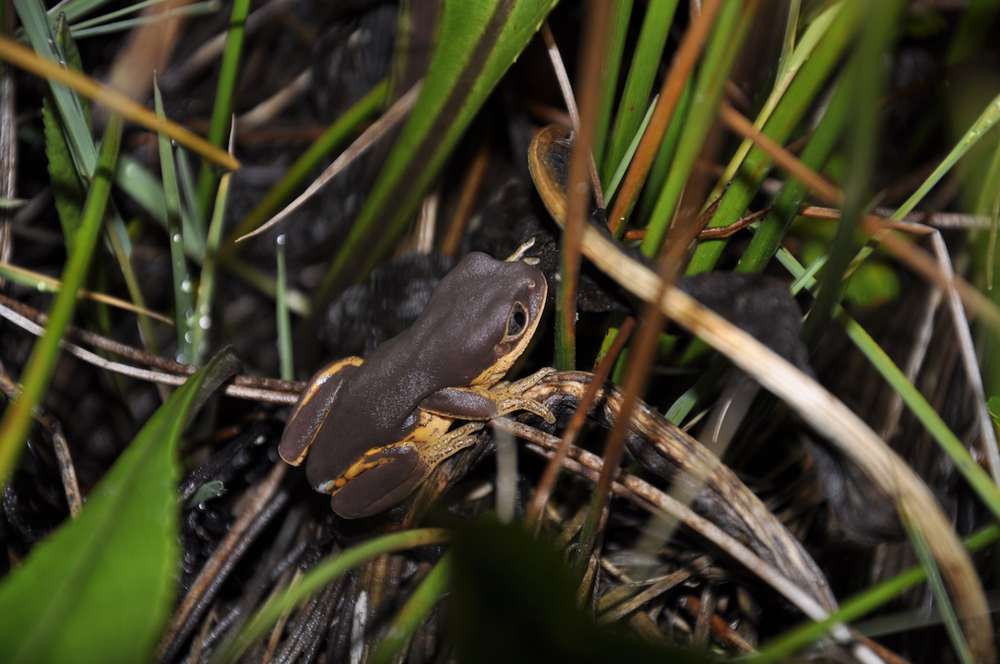
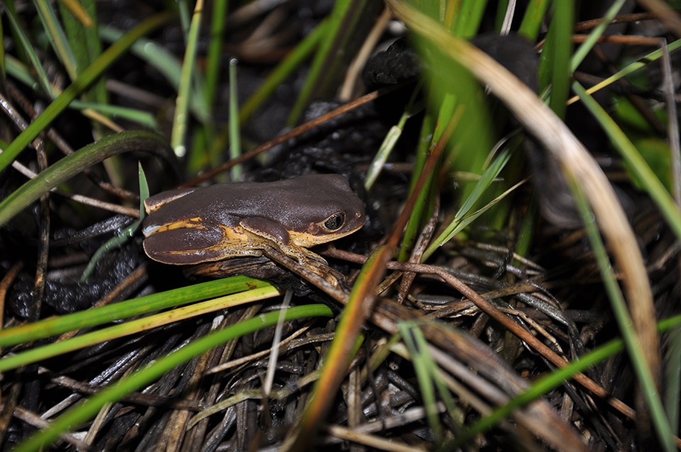
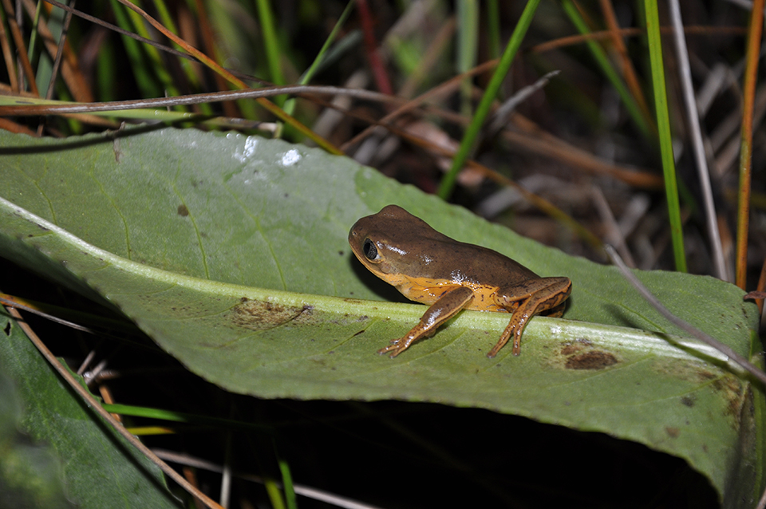
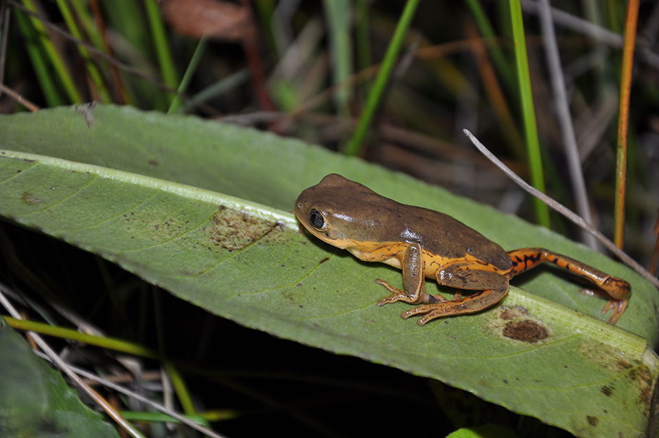
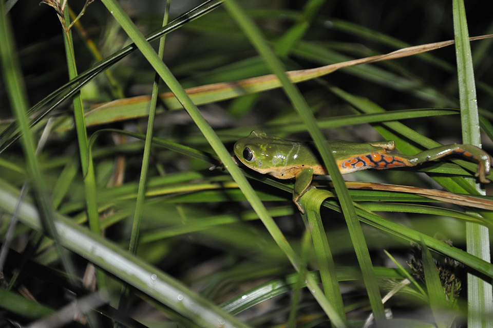
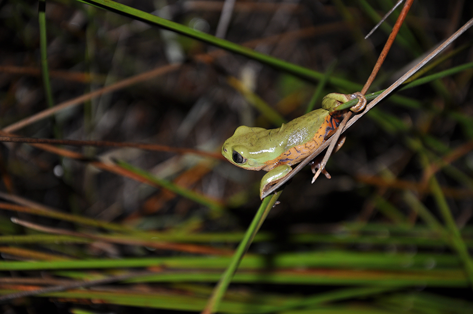

É uma perereca de aproximadamente 4 cm, de cor verde, com as partes internas dos braços e das coxas alaranjados, com manchas escuras e ventre amarelo claro. Até o momento, foi observada se reproduzindo em lagoas permanentes e banhado, em área aberta. Sua distribuição conhecida é muito restrita, sendo uma pequena área de campos naturais no município de Água Doce, estado de Santa Catarina. Os ovos são depositados em folhas nas margens ou interior das lagoas e após a eclosão, os girinos caem na água para completar o seu desenvolvimento.
     